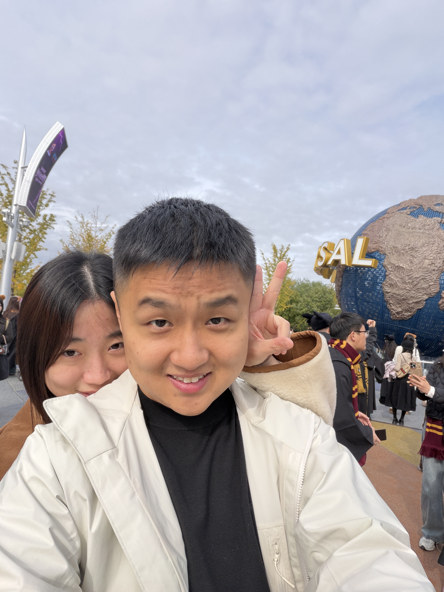
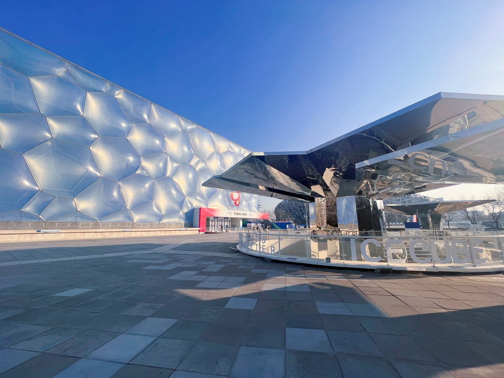

西门银杏 → 湿地 → 奥海
西门停车、同门取车；山坡是可选短支线。赏景拍照留约2.5小时。

下一站 奥林匹克公园
把周末留给湖边的秋色，
也留给一起出发的我们。
北京 · 2026年11月
把户外秋景留在上午，下午安排场馆与城市散步。
鸟巢当天有演唱会，地下停车全天关闭；下午以外围拍照为主。
西门停车、同门取车；山坡是可选短支线。赏景拍照留约2.5小时。
中午只挪一次车。金鼎轩在B座3层，Grid Coffee在1层南门附近。
参观或拍照，再沿中心区返回取车。傍晚光线和夜景按天气决定。
THE ROUTE · 先看清楚，再出发
上午用奥森官网导览底图，下午用中心区全景图。点编号看这一站；放大后可以拖动查看。另附现成赏秋图和3.6公里环湖线。
红色为主线；蓝色为可选山坡支线。湖岸和山坡走完原路回接。

常去游客的原图把南园西门、湿地芦苇、奥海西岸银杏集中标了出来。我们保留这组看点，按自驾取车改成西门进出的走法。
打开作者完整攻略 ↗
这条从南门起终点，绕奥海走一圈，路线更规整。若改走它，直接使用南门停车和同门取车，不要上午再去西门绕接。
打开3.6公里原路线 ↗A DAY TOGETHER · 看什么，怎么走
以下以09:00到停车场为例。上午留时间拍照，下午留一座场馆；不用追北园、环全园或额外登塔。
 09:15–09:40 · 建议停留
09:15–09:40 · 建议停留先看近门的银杏步道，不急着冲到南门。这里适合用树干和落叶作背景，边走边拍，给今天留一个轻松的开始。
拍照思路 一人沿路慢慢走，另一人退几步拍全身；合照可找稳定位置定时拍。用2倍焦段减少杂乱背景。
 09:40–10:30 · 建议停留
09:40–10:30 · 建议停留这是上午最值得慢下来的区域。沿湿地外围与可开放的观景步道看芦苇、落叶和水鸟；到了叠水花台、沉水廊道附近，再按路牌选一段进去。
拍照思路 用芦苇作前景，把人放在画面边侧；水鸟适合远一点拍，不追赶也不投喂。
 加走20–30分钟 · 可选加走
加走20–30分钟 · 可选加走体力和天气都舒服，再从湿地东北侧走一段山坡林路，看红黄树叶与林间层次。想登天境看中轴线全景，可按现场上山牌另外加走。
拍照思路 把彩叶放近处、人物放路上，拍出前后层次；图中彩叶只是资料参考，当日以叶况为准。
 10:40–11:05 · 建议停留
10:40–11:05 · 建议停留回到湿地南端后向湖西岸走，选能同时看到湖水、远岸树色的位置停一会儿。这里把“公园散步”收成一张开阔的合照，比一路赶点更有记忆。
拍照思路 手机横过来，用1倍把人和湖都装进画面；如果风小有倒影，可以把地平线放在画面中间。
上述景点照片为奥森官网、北京旅游网资料图，帮助识别景观；不是11月7日的实时叶况。山顶与喷泉不列为必须完成项目。
北辰荟店，L320B / L321。位置就在下午停车的商场里，可以先吃午饭，再下楼往场馆区走。
官网时段07:30—22:00；电话010-60991925。若排队久，就在同层选空位热食，别为了吃饭再开车。
地图找这家店 ↗北辰荟店，1层L115。可以出发前买一杯，也可以留到返回商场时再坐下来。
从这里出南门，继续往水立方方向走；建议把厕所、补水和充电一起在商场解决。
地图找咖啡店 ↗沿西侧道路向南，经过国家会议中心、国家体育馆一侧。预留25–35分钟步行。
打开这段步行导航 ↗从水立方外侧向东走。7号门与6号门不同，不要默认能穿馆抄近路。
6号门附近 → 鸟巢外围 ↗沿开放公共步道向北返回商场，再按车位备忘下车库；给返程步行留30–40分钟。
回北辰荟的步行导航 ↗
外面看气泡状膜结构，里面看比赛大厅与双奥场馆的空间。想看场馆，选普通参观；想加光影内容，再看“参观＋水之光”当天票。
官网参考：普通参观30元，参观＋水之光48元。入口按票面，7号门在西侧、6号门在东南侧。不是游泳或嬉水乐园门票。
建议留60–90分钟。只想拍外观可缩短到20分钟，把时间留给中心区散步。

到西侧外围看钢结构交织的轮廓，后退一些把完整建筑放进画面。两个人站在画面下方，不必贴着围栏拍大头照。
明天有演唱会，下午不安排入内。只走开放公共区域；如果近处有围挡，在较远的开放广场拍全景就好。
夜景资料图供参考。17点左右天色渐暗，但准确亮灯时间未确认，不把“等灯”作为行程终点。
体力好、雨不大，可沿中轴景观大道方向慢慢返回，看两侧场馆和下沉庭院入口；不再绕到鸟巢东侧。回北辰荟喝热饮，17:30左右取车。若想留晚饭，直接在商场吃；演唱会进场时段可能堵车。
PARK & GO · 两个停车点，各自回车
园区散步免费，普通入园无需预约。只有选择场馆参观时另购票。地图定位门，车位照片定位车。
林萃路一侧 · 从西门进，也从西门出
官网小型车标准为1元/10分钟（6元/小时）。按上午停3小时估算约18元；以入口公示和实际计费为准。
西门满位时，再考虑南门停车并改走“现成3.6公里环湖线”。不要换了门还照西门路线找车。
搜索西门停车入口 ↗北辰西路6号院 · 驾车进车库，步行走商场南门
车库入口已核实；费用与消费抵扣以当天公示为准。鸟巢地下停车场11月7日关闭，别导航到那里。
回来时先到北辰荟南门，再按车位照片下车库；不把机动车坡道当步行入口。
高德导航到车库入口 ↗预算口径：上午停车约18元是按3小时估算；如两人都进水立方，普通参观约60元或含水之光约96元。餐饮、下午停车另计，不预设消费抵扣。
PLAN B · 改动很小，也能玩好
若出门时已持续大雨，改成北辰荟停车→水立方为主，奥森留给下一次晴天。
11月7日旅游10:00—13:00开放，12:00停止检票。先核对票务，把上午奥森段替换成鸟巢参观，再去午餐。
不要把完整奥森＋鸟巢都塞进上午。普通旅游票不包含19:00的演唱会；地下停车场依然全天关闭。
查看当日适用公告 ↗整理与核对日期：2026年11月6日。本页复用真实地图与现成游览资料，再按自驾取车调整；步行时段是建议预留，不是实测到达时间。天气、车位、围挡和场馆当天项目请在出发时再确认。
上午路线不是Pacer原环线；图中红线包含湖岸短往返，蓝线为山坡可选往返。下午全景图用于判断场馆方位，不按比例；各门与回车导航采用高德地点坐标。合照为你提供的原照片。